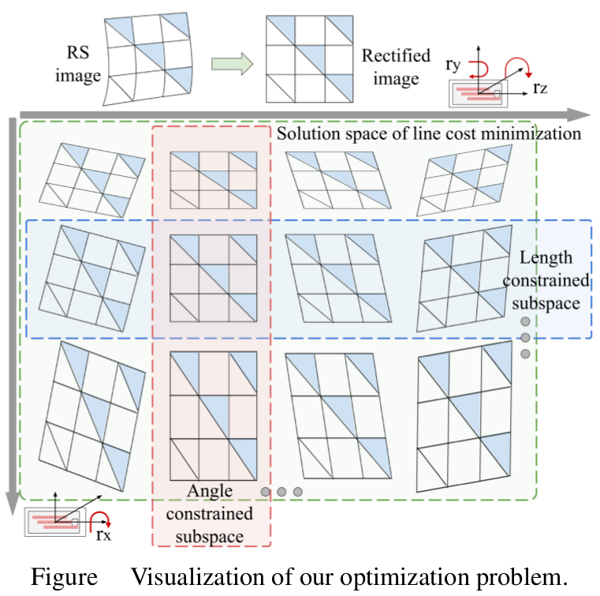
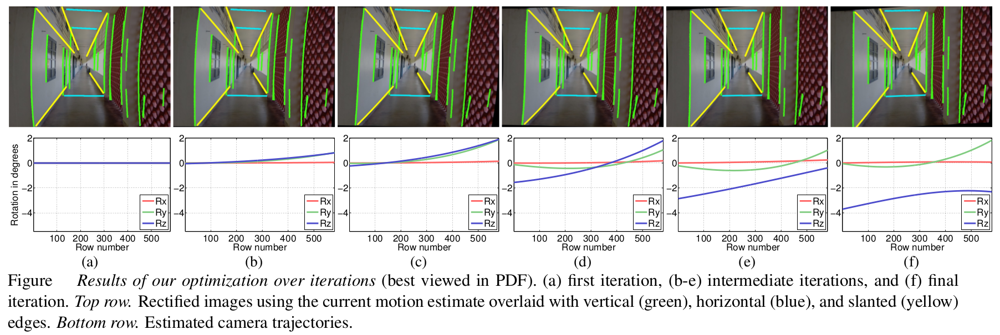

|  |
The rule of perspectivity that ‘straight-lines-must- remain-straight’ is easily inflected in CMOS cameras by distortions introduced by motion. Lines can be rendered as curves due to the row-wise exposure mechanism known as rolling shutter (RS). We solve the problem of correcting distortions arising from handheld cameras due to RS effect from a single image free from motion blur with special relevance to urban scenes. We develop a procedure to extract prominent curves from the RS image since this is essential for deciphering the varying row-wise motion. We pose an optimization problem with line desirability costs based on straightness, angle, and length, to resolve the geometric ambiguities while estimating the camera motion based on a rotation-only model assuming known camera intrinsic matrix. Finally, we rectify the RS image based on the estimated camera trajectory using inverse mapping. We show rectification results for RS images captured using mobile phone cameras. We also compare our single image method against existing video and nonblind RS rectification methods that typically require multiple images.
From Bows to Arrows: Rolling Shutter Rectification of Urban Scenes
A.P. Vijay Rengarajan, A.N. Rajagopalan, and R. Aravind
European Conference on Computer Vision (ECCV), Zurich, Switzerland
September 2014
Paper (1.1MB)
Poster (0.45MB)
@inproceedings{ rengarajan:2016:frombows,
year={2016},
title={From Bows to Arrows: Rolling Shutter Rectification of Urban Scenes},
author={Rengarajan, Vijay and Rajagopalan, Ambasamudram Narayanan and Aravind, Rangarajan},
booktitle={Proceedings of the IEEE International Conference on Computer Vision},
}
Given a single RS image, we detect curves and estimate the row-wise camera motion modelled as a polynomial that would make them straight under angle and length constraints. Finally, the RS image is rectifed using the estimated motion.
|  |